Repstate
Сила в твоём ритме.
Бренд небольших фитнес-студий и сервис записи, которые помогают начать с одного понятного занятия и спокойно вернуться к следующему.
Связать знакомство со студией с реальной записью.
Взрослому человеку важнее удобное время, понятная нагрузка и спокойное отношение, чем спортивное давление. Система должна показать формат, тренера и наличие мест, объяснить первый визит и честно обработать заполненную группу.
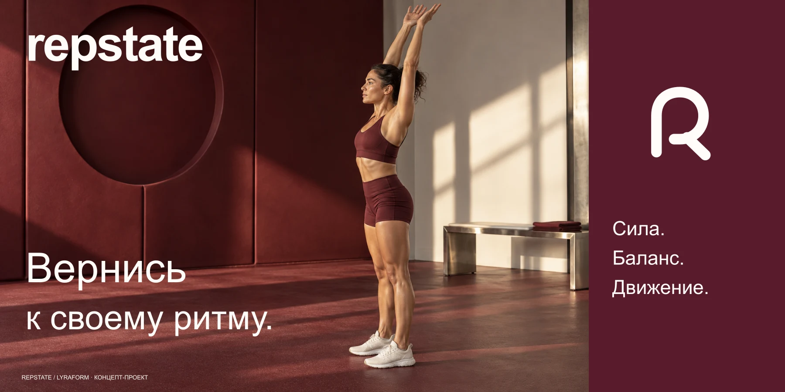
Возвращение становится основой бренда.
Петля в знаке напоминает о следующем занятии. Один глубокий винный цвет объединяет коммуникацию, интерфейс и пространство. Сдержанная система не спорит с человеком и оставляет достаточно воздуха для движения.
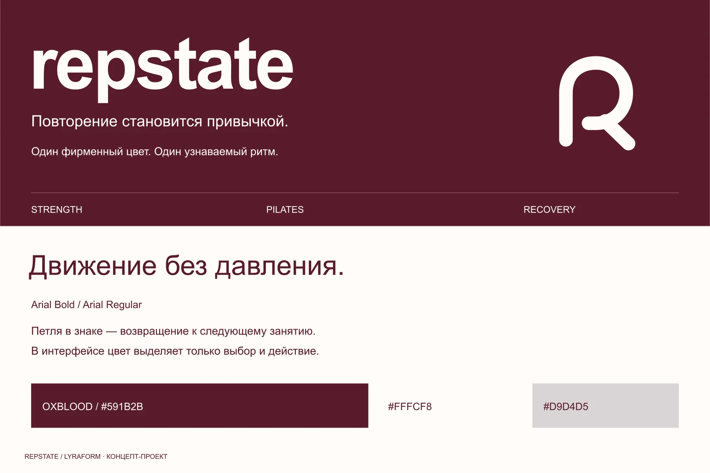
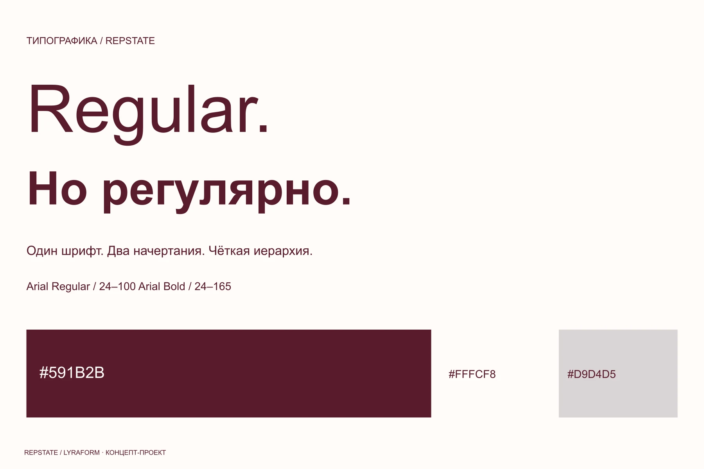
Одно занятие — понятный первый шаг.
Расписание показывает даты, направления и свободные места. Экран занятия раскрывает программу, длительность и подготовку. Если группа заполнена, пользователь видит честный лист ожидания, а не ложное подтверждение брони.
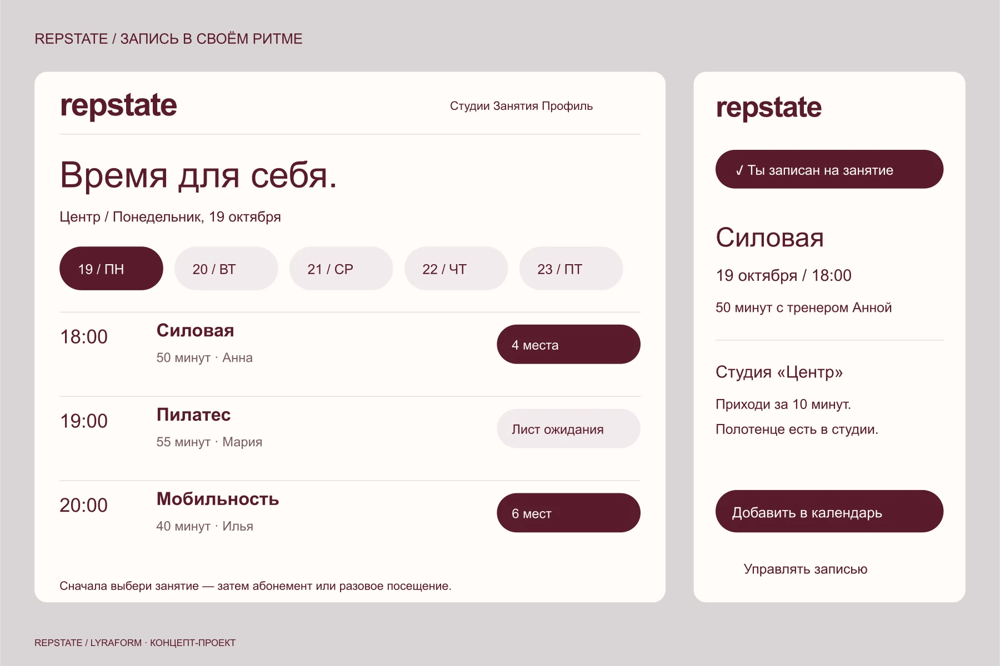
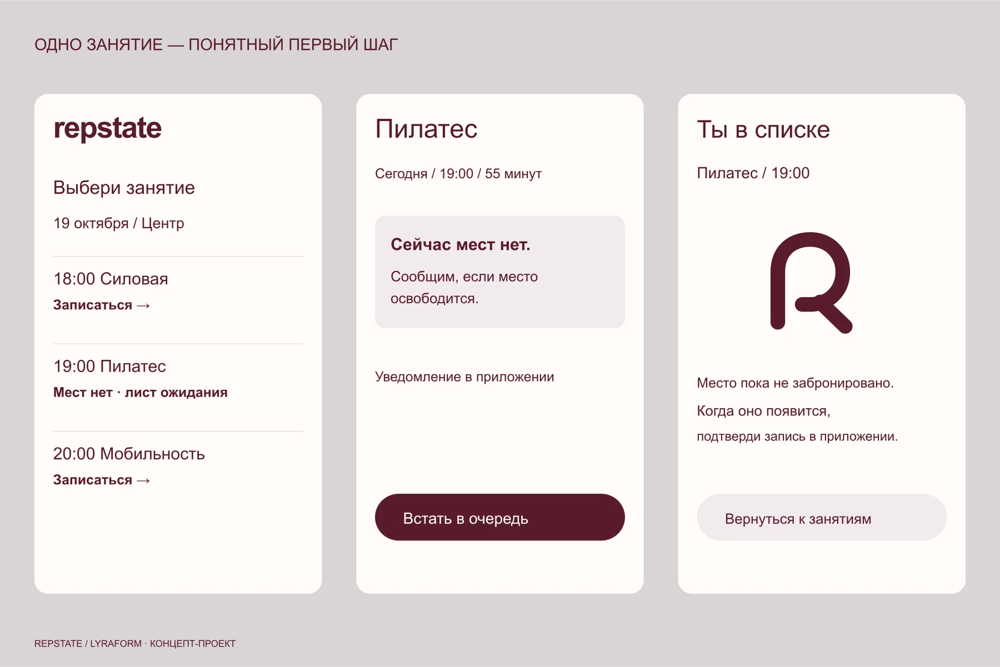
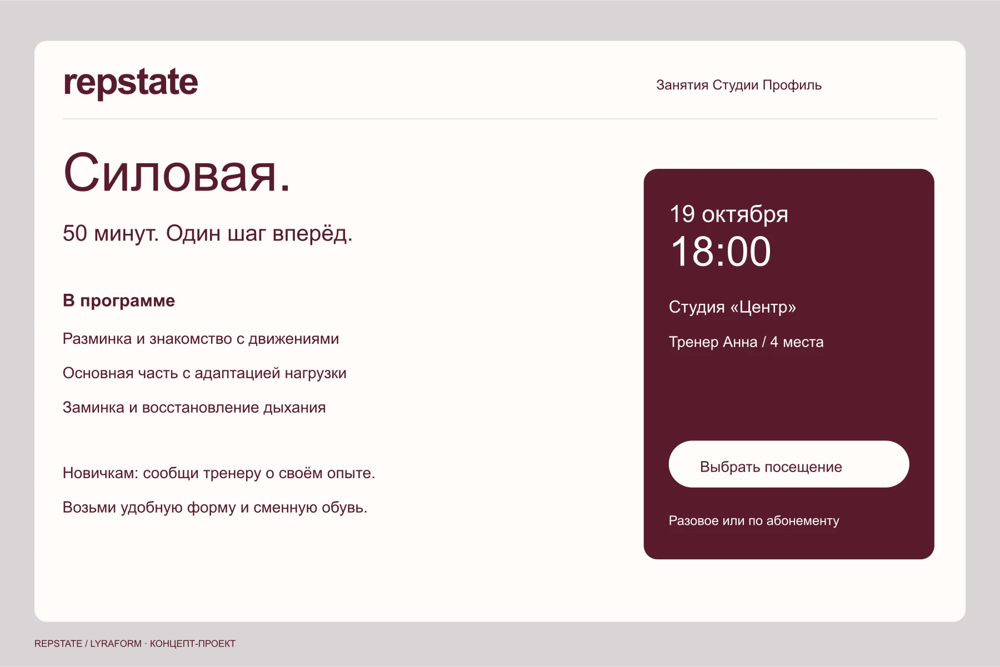
Один ритм продолжается от экрана до двери зала.
Рецепция, навигация и гостевой пропуск используют ту же типографику и цвет. Кампания приглашает не к рекордам, а к устойчивому ритму: первое занятие, возвращение и расписание на неделю.
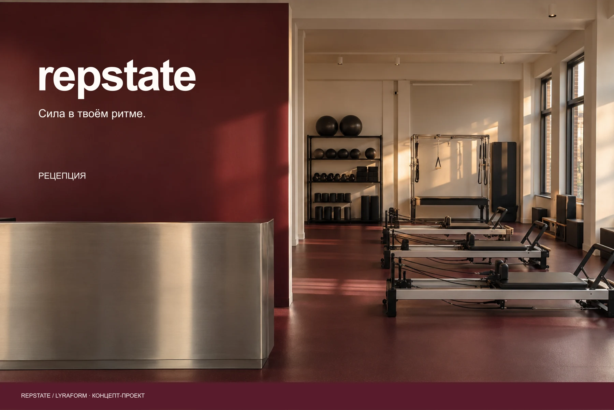
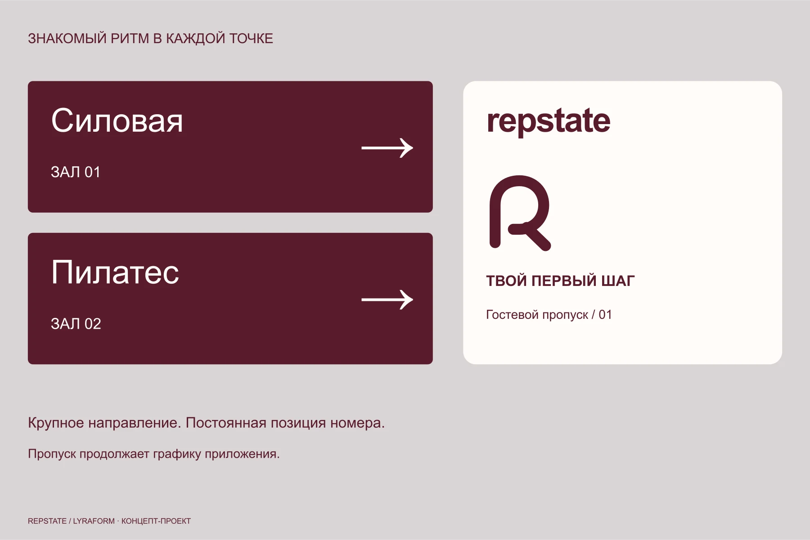
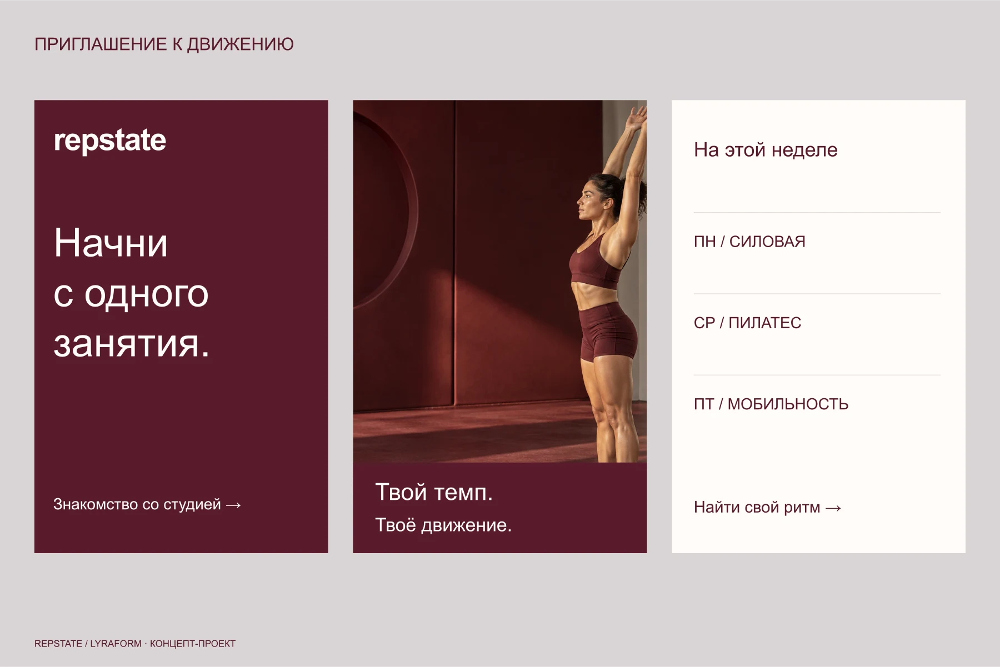
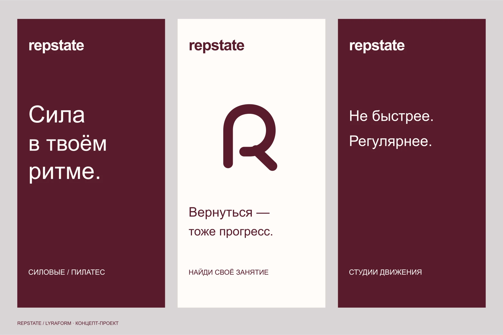
Линия возвращается к себе и собирает знак.
Анимация начинается с точки, продолжает петлю и фиксирует имя студии. В интерфейсе тот же принцип проявляется через ясную смену статуса после записи.
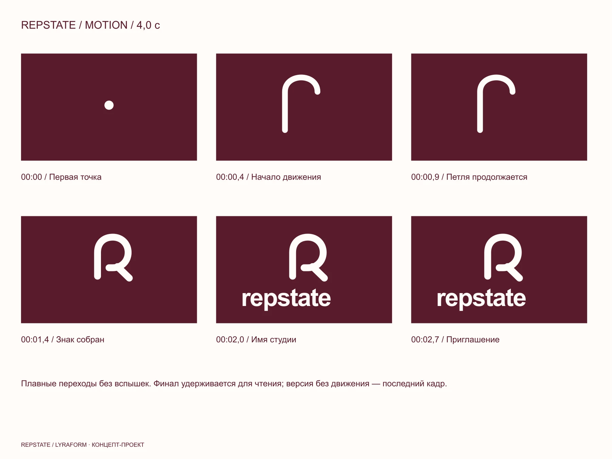
REPSTATE — вымышленный концепт-проект LYRAFORM. Люди и пространства созданы для презентации идеи; студия не проводит занятия, а интерфейс не является работающим сервисом.